BLE 协议之 GATT
[toc]
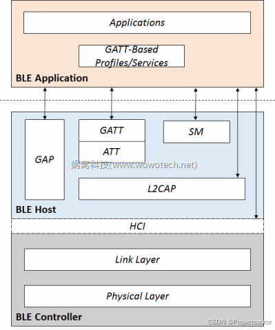
在上一节讲了什么是 ATT，ATT 之所以称作 protocol，是因为它还比较抽象，仅仅定义了一套机制，允许 Client 和 Server 通过 Attribute 的形式共享信息。而具体共享哪些信息，ATT 并不关心，因为这是由 GATT（Generic Attribute Profile）来控制。
GATT 相对 ATT 只多了一个 G，但含义却大不同，因为 GATT 是一个 profile（更准确的说是 profile framework）。
在蓝牙协议中，profile 一直是一个比较抽象的概念，我们可以将其理解为“应用场景、功能、使用方式”都被规定好的 Application。传统的BR/EDR 如此，BLE 更甚。上面我们讲过，BLE很大一部分的应用场景是信息（Attribute）的共享，因此，BLE协议栈基于Attribute Protocol，定义了一个称作 GATT（Generic Attribute）的 profile framework（它本身也是一个 profile），用于提供通用的、信息的存储和共享等功能。
一、简介
GATT（Generic Attributes）：通用属性， 低功耗蓝牙的设备之间的通信协议 。
GATT 使用 ATT 协议， 定义了一套服务框架，用于发现、读写、通知、广播信息的配置 。
角色的定义
为了更好的实现 GATT 的 profile 概要文件， GATT 定义了如下角色：
Client：主要向服务器发送命令和请求，接收服务器的响应Server：接收命令和请求，发送响应
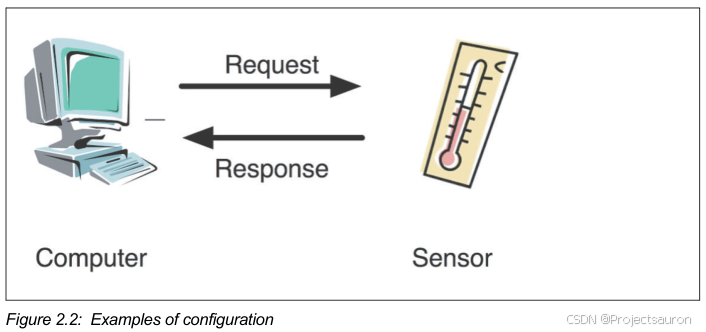
二、协议框架
GATT Profile 定义了用于通信的数据结构，包括 services 和 characteristics。
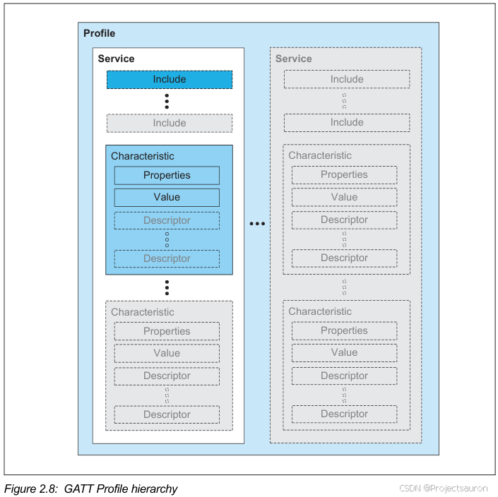
由上图可知， GATT profile 的层次结构依次是： Profile —> Service —> characteristic。
- 最顶层的是
profile，一个profile由一个或者多个service组成。 - 一个
service又由characteristics组成。 - 每个
characteristic由property、value、descriptor组成。
1、Profile
GATT Profile 可以理解为一种规范，一个标准的通信协议 ，它存在于==从机==中。它定义了如何使用 ATT 协议去广播、发现、读写相关属性信息。
下面是 Attribute Type 的类型：
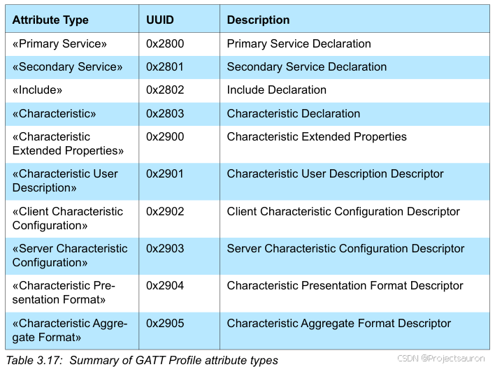
2、Service
2.1 Service 定义
Service 服务是完成特定功能或特性的数据和相关行为的集合 。
在 BLE 从机中，通过有多个服务，例如电量信息服务、系统信息服务等，每个 service 中又包含多个 characteristic 特征值。每个具体的 characteristic 特征值才是 BLE 通信的主题。
比如当前的电量是 80%，所以会通过电量的 characteristic 特征值存在从机的 profile 里，这样主机就可以通过这个 characteristic 来读取80%这个数据。
一个 Service 的定义包括了： Service 声明、（可选的） include 定义、（可选的） characteristic 定义。
2.2 Service 声明
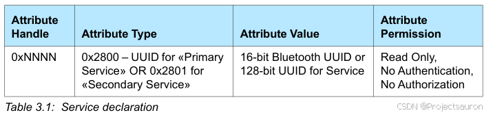
Attribute Type：服务类型有两种，分别为primary service和secondary service，即 首要服务和次要服务 ，对应的Attribute Type分别为 0x2800 或 0x2801 ，Attribute Value：是一个16 位 UUID 或者 128 位的 UUID 。用来表示这是什么服务。Attribute permission：表示这个该声明即这个 ATT 属性是只读的、无需验证的、无需授权的。
3、include
3.1 include 定义
include 用于去引用已定义存在的服务，相当于 C 语言中的 include 包含。
include 定义仅仅包含一个 include Declaration。
3.2 include 声明
include Declaration 如下：
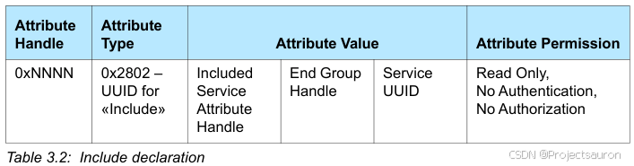
Attribute Type：服务类型为 include ，对应的Attribute Type为 0x2802 。Attribute Value：设置为所要引用的服务的Attribute Handle、End Group Handle、UUIDAttribute permission：表示这个该声明即这个ATT属性是只读的、无需验证的、无需授权的。
4、Characteristic
4.1 Characteristic 定义
characteristic 包含了==特征==和==值==的定义。
BLE 主从机的通信均是通过 characteristic 来实现，可以理解为一个标签，通过这个标签可以获取或者写入想要的内容。
characteristic 的定义包含了 characteristic declaration，Characteristic Value declaration，characteristic descriptor declaration，其中前两个属性是必须的，最后一个属性是可选的。
characteristic = characteristic声明 + characteristic value声明 + 可选的descriptor声明
4.2 Characteristic 声明
Characteristic declaration 如下：
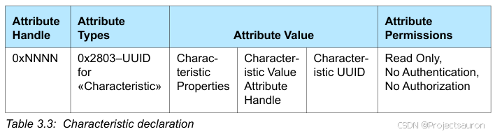
Attribute Type：服务类型为Characteristic，对应的Attribute Type为 0x2803 。Attribute Value：设置为Characteristic Properties、Characteristic Value Attribute Handle、Characteristic UUID。Attribute permission：表示这个该声明即这个 ATT 属性是只读的、无需验证的、无需授权的。
Attribute Value 字段如下 ：
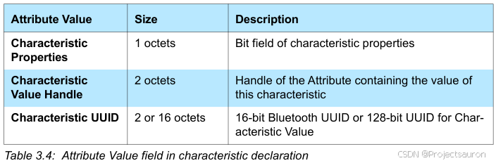
一个服务，可能有多个 characteristic definitions 用相同的 Characteristic UUID。
Characteristic Properties 字段如下：
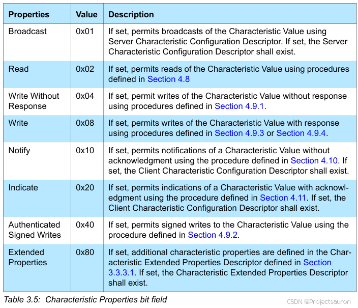
Characteristic Value Attribute Handle：包含了characteristic value的句柄Characteristic UUID：是一个 16 位 UUID 或者 128 位的 UUID 。
4.3 Characteristic Value 声明
Characteristic Value Declaration 如下 ：
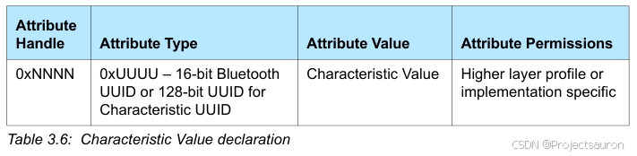
Characteristic Value 是 characteristic 声明后的第一个属性。
Attribute Type：该字段的值设置为Characteristic声明时的 UUIDAttribute Value：为所声明的Characteristic中相同 UUID 的属性的值。Attribute permission：由上层权限指定
4.4 Characteristic Descriptor 声明
Characteristic descriptors 主要用于包含一些与 Characteristic Value 相关的信息，GATT 定义了多种可选 descriptors ，如下：
Characteristic Extended PropertiesCharacteristic User DescriptionClient Characteristic ConfigurationServer Characteristic ConfigurationCharacteristic Presentation FormatCharacteristic Aggregate Format
每一种 descriptor 都有其特有的格式。
4.4.1 Characteristic Extended Properties
Characteristic Extended Properties declaration 是一个定义扩展特征属性的描述符。characteristic descriptor 可以出现在特征值之后的特征定义内的任何位置。在一个特征定义中只能存在一个特征扩展属性声明。
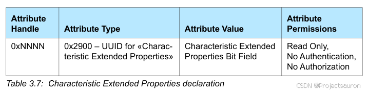
Attribute Type：应设置为Characteristic Extended Properties的 UUID，对应的值为 0x2900Attribute Value：长度应为两个字节，并应包含特征扩展属性位字段Attribute permission：只读，不需要身份验证和授权即可读取。
特征扩展属性位域描述了如何使用特征值或如何访问特征描述符的附加属性。如果设置了下表中定义的比特位，则允许描述的操作。可以设置多个附加属性。
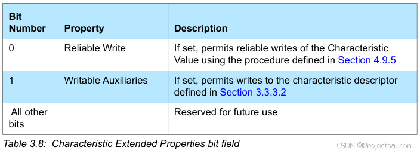
4.4.2 Characteristic User Description
Characteristic User Description 是一个可选的特征描述符，它定义了一个可变大小的UTF-8字符串，该字符串是特征值的用户文本描述。
如果设置了特征扩展属性的可写辅助位，则可以写入该特征描述符。characteristic descriptor 可以出现在特征值之后的特征定义内的任何位置。在一个特征定义中只能存在一个特征用户描述声明。
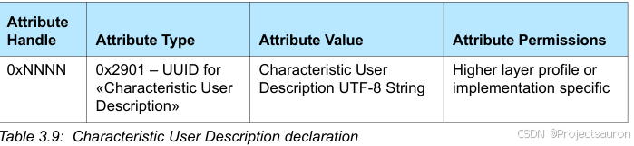
Attribute Type：该字段的值设置为Characteristic user description，对应的值为 0x2901Attribute Value：为定义的 UTF-8 字符串Attribute permission：由上层权限指定
4.4.3 Client Characteristic Configuration
Client Characteristic Configuration 是一个可选的特征描述符，它定义了特定客户端如何配置特征。客户端特征配置描述符值应该在绑定设备的连接之间持久存在。客户端特征配置描述符值应设置为与非绑定设备的每个连接的默认值。特征描述符值是位域。当一个比特位被设置时，该操作将被启用，否则将不会被使用。客户端特征配置描述符可以出现在特征值之后的特征定义中的任何位置。在一个特征定义中只能存在一个客户端特征配置声明。
客户端可以编写这个配置描述符来控制服务器对客户端的这个特性的配置。每个客户端都有自己的客户端特征配置实例。客户端特性配置的读操作只显示该客户端的配置，而写操作只影响该客户端的配置。服务器可能需要身份验证和授权来编写配置描述符。客户端特性配置声明应该是可读可写的。
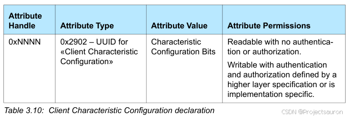
Attribute Type：该字段的值设置为Client Characteristic Configuration，对应的值为 0x2902Attribute Value：长度为2个字节，设置为特征描述符值Attribute permission：无需身份验证或授权即可读取。可写的身份验证和授权由更高的层规范定义或具体实现
下表定义了下列客户端特征配置位：
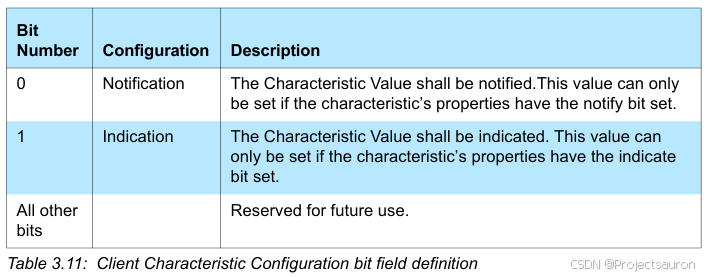
客户端特性配置描述符的默认值应该是 0x0000。
在客户端和服务器之间应该有一个单一的客户端特征配置描述符，而不管它们之间的ATT承载的数量。
4.4.4 Server Characteristic Configuration
Server Characteristic Configuration 声明是一个可选的特征描述符，它定义了如何为服务器配置特征。特征描述符值是位域。当一个比特位被设置时，该操作将被启用，否则将不会被使用。服务器特征配置描述符可以出现在特征值之后的特征定义内的任何位置。在一个特征定义中只能存在一个服务器特征配置声明。
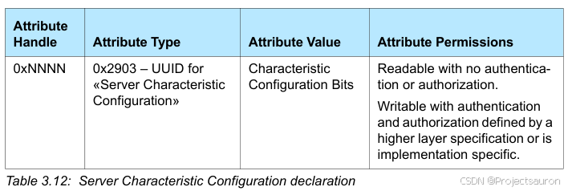
Attribute Type：该字段的值设置为Server Characteristic Configuration，对应的值为 0x2903Attribute Value：长度为2个字节，设置为特征描述符值Attribute permission：无需身份验证或授权即可读取。可写的身份验证和授权由更高的层规范定义或具体实现
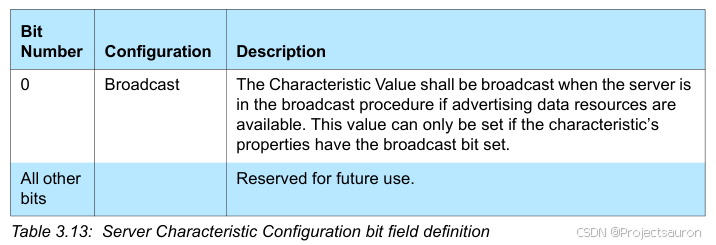
4.4.5 Characteristic Presentation Format
Characteristic Presentation Format 是一个可选的特征描述符，它定义了特征值的格式。特征描述子可以出现在特征值之后的特征定义内的任何位置。如果一个特征定义中存在多个特征表示格式声明，则一个特征聚合格式声明应作为该特征定义的一部分存在。
特征表示格式值由格式、指数、单位、名称空间和描述五个部分组成。
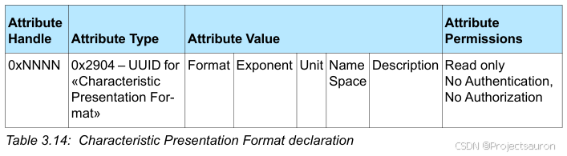
Attribute Type：该字段的值设置为Characteristic Presentation Format，对应的值为 0x2904Attribute Value：特征描述符值Attribute permission：只读的，不需要认证或授权
Attribute Value字段含义：Format：确定特征值中包含的单个值的格式。该字段的值定义在分配的数字中Exponent：用于整型数据类型，用于确定值的进一步格式化方式。该字段仅用于整数格式类型，指数字段的类型是 sint8。
$$
actual value = Characteristic Value * 10^{Exponent}
$$
由上式可以看出，实际值是特征值和 10 的幂指数的组合。这有时被称为定点数。
例：
如果指数是 2，特征值是 23，那么实际值就是 2300。
如果指数是 -3，特征值是 3892，那么实际值就是 3.892。
Unit：UUID，见 Assigned NumbersName Space：用于标识负责定义Description字段枚举的组织，见 Assigned NumbersDescription：一个枚举值，定义在由Name Space字段标识的组织分配的编号中。
4.4.6 Characteristic Aggregate Format
Characteristic Aggregate Format 是一个可选的特征描述符，它定义了聚合特征值的格式。特征描述子可以出现在特征值之后的特征定义内的任何位置。一个特征定义中只能存在一个特征集合格式声明。
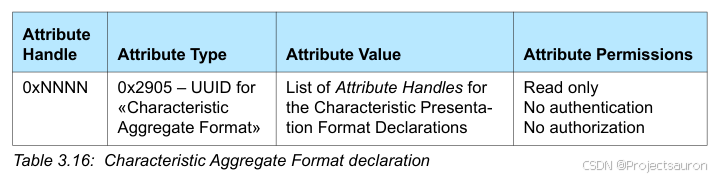
Attribute Type：该字段的值设置为Characteristic Aggregate Format，对应的值为 0x2905Attribute Value：由特征表示格式声明的属性句柄列表组成，其中每个属性句柄指向一个特征表示格式声明Attribute permission：只读的，不需要认证或授权